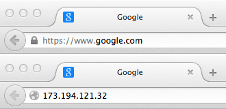

Una vista simplificada de lo que sucede cuando ves una página web en un navegador web de tu computador o teléfono.
Esta teoría no es esencial para escribir código web a corto plazo, pero en poco tiempo empezarás a
beneficiarte realmente al entender lo que está sucediendo en el fondo.
Los clientes y servidores
Las computadoras conectadas a la web se llaman clientes y servidores. Un diagrama simplificado de
cómo interactúan se vería así:
● Los clientes son dispositivos de los usuarios conectados a Internet (por ejemplo, tu ordenador conectado a la red Wi-Fi o
el teléfono conectado a la red de telefonía móvil) y el software que se encuentra disponible y permite acceder a Internet en
dichos dispositivos (normalmente, un navegador web como Firefox o Chrome).
● Los servidores son computadores que almacenan páginas web, sitios o aplicaciones. Cuando un dispositivo cliente quiere
acceder a una página web, una copia de la página web se descarga desde el servidor en el equipo cliente y se muestra en el
navegador web del usuario.
Las otras partes de la caja de herramientas
El cliente y el servidor que describimos anteriormente, no cuentan toda la historia. Hay muchas otras partes involucradas y
vamos a describirlas a continuación.
Por ahora, imaginemos que la web es un camino. En un extremo de la carretera, está el cliente, que es como tu casa.
En el extremo opuesto del camino, está el servidor, que es una tienda en la que deseas comprar algo
Además del cliente y el servidor, también tenemos que saludar a:
● Tu conexión a Internet: permite enviar y recibir datos en la web. Básicamente es el recorrido entre tu casa y la tienda.
● TCP/IP: Protocolo de Control de Transmisión y Protocolo de Internet, son los protocolos de comunicación que definen
cómo deben viajar los datos a través de la web. Esto es, los medios de transporte que te permiten hacer un pedido, ir a la
tienda y comprar los productos. En nuestro ejemplo, podría ser un coche, una bicicleta o tus propios pies.
● DNS: los servidores del Sistema de Nombres de Dominio (DNS, por sus siglas en inglés), son como una libreta de direcciones
de sitios web. Cuando escribes una dirección web en el navegador, el navegador busca los DNS antes de recuperar el sitio web.
El navegador necesita averiguar en qué servidor vive el sitio web y así enviar los mensajes HTTP al lugar correcto (ver más abajo).
Esto es como buscar la dirección de la tienda para que puedas llegar a ella.
● HTTP: el Protocolo de Transferencia de Hipertexto es un protocolo de aplicación que define un idioma para que los clientes y
servidores se puedan comunicar. Esto es como el idioma que utilizas para ordenar tus compras.
● Archivos componentes: un sitio web se compone de muchos archivos diferentes, que son como las diferentes partes de los
productos que comprarás en la tienda. Estos archivos se dividen en dos tipos principales:
○ Archivos de código: Los sitios web se construyen principalmente con HTML, CSS y JavaScript, aunque te encontrarás con otras
tecnologías más adelante.
○ Recursos: este es un nombre colectivo para el resto de materiales que conforman un sitio web, como imágenes, música,
video, documentos de Word, archivos PDF, etc.
Entonces, ¿qué sucede exactamente?
Cuando escribes una dirección web en el navegador (usando nuestra analogía para ir a la tienda):
1. El navegador va al servidor DNS y encuentra la dirección real del servidor donde el sitio web vive
(encontrar la dirección de la tienda).
2. El navegador envía un mensaje de petición HTTP al servidor, pidiéndole que envíe una copia de la página web para el cliente
(ir a la tienda y hacer un pedido). Este mensaje y todos los datos enviados entre el cliente y el servidor, se envían a través de
tu conexión a Internet usando TCP/IP.
3. Siempre que el servidor apruebe la solicitud del cliente, el servidor enviará al cliente un mensaje «200 OK», que significa,
«¡por supuesto que puedes ver ese sitio web! Aquí está.», y comenzará a enviar los archivos de la página web al navegador como una
serie de pequeños trozos llamados paquetes de datos (la tienda te entrega tus productos y los llevas de regreso a casa).
4. El navegador reúne los pequeños trozos, forma un sitio web completo y te lo muestra (llegas a casa con tus nuevas compras).
Explicación de los DNS
Las direcciones webs reales no son las agradables y fácilmente recordables secuencias que tecleas en la barra de direcciones para encontrar
tus sitios webs favoritos. En realidad, se trata de secuencias de números, algo como 63.245.217.105.
Lo anterior se llama dirección IP y representa un lugar único en la web. Sin embargo, no es muy fácil de recordar, ¿verdad? Por eso se inventaron
los servidores de nombres de dominio. Estos son servidores especiales que hacen coincidir una dirección web tecleada desde tu navegador («mozilla.org»,
por ejemplo) con la dirección real del sitio web (IP).
Los sitios webs se pueden acceder directamente a través de sus direcciones IP. Intenta acceder a la página web de Mozilla escribiendo 63.245.217.105 en
la barra de dirección de una nueva pestaña en tu navegador. Puedes encontrar la dirección IP de un sitio web escribiendo su dominio en una herramienta
como IP Checker.

Explicación de los paquetes
Anteriormente hemos utilizado el término paquetes para describir el formato en que los datos se envían desde el servidor al cliente. ¿Qué significa esto?
Básicamente, que los datos se envían a través de la web como miles de trozos pequeños, permitiendo que muchos usuarios pueden descargar la misma página
web al mismo tiempo. Si los sitios web fueran enviados como grandes trozos, sólo un usuario podría descargarlos a la vez, lo que volvería a la web muy
ineficiente y poco divertida.